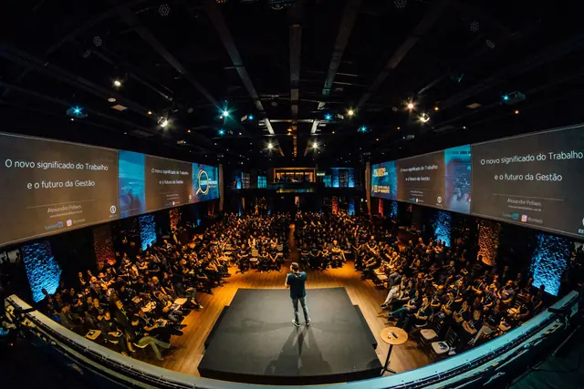
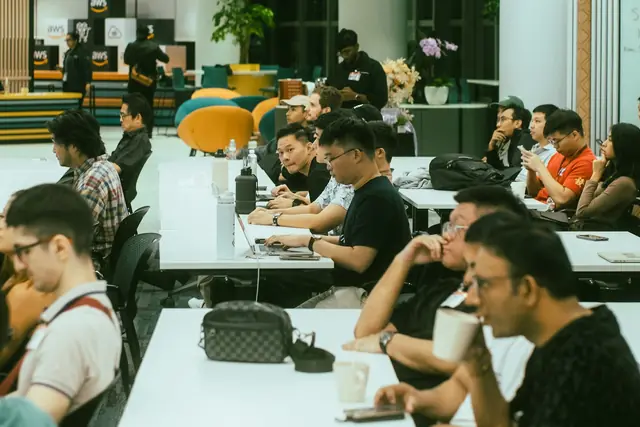
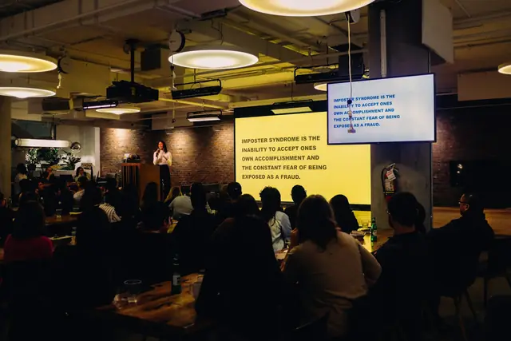
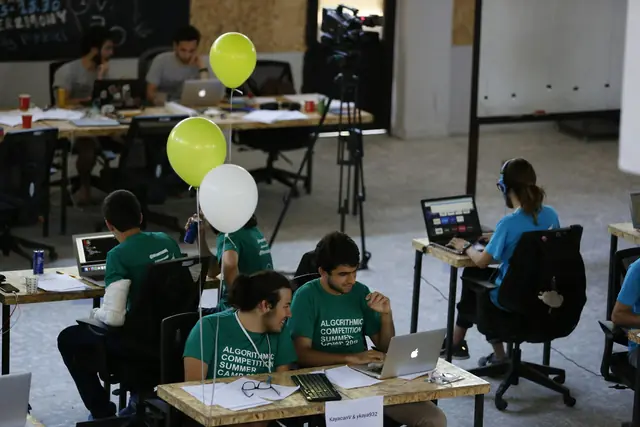

Venues
Where events happen, how to get there, and what access is like.

Riverside Innovation Hall 1 upcoming · Next: East Africa Data Summit 2026, 8–9 Dec 2026
Kilimani Learning Lab 1 upcoming · Next: Data Engineering Bootcamp: Pipelines with Python, 12 Dec 2026 Ngong Road Community Hall No upcoming events
Lakeview Conference Centre 1 upcoming · Next: Kampala Data & ML Meetup: Forecasting rainfall, 3 Dec 2026
Harbourfront Tech Hub 1 upcoming · Next: Dar es Salaam Open Data Hackathon, 16–17 Jan 2027 Hills Convention Pavilion 1 upcoming · Next: Responsible AI Policy Forum, 4 Feb 2027 Bole Data Studio 1 upcoming · Next: SQL for Analysts, 23 Jan 2027No venues match.